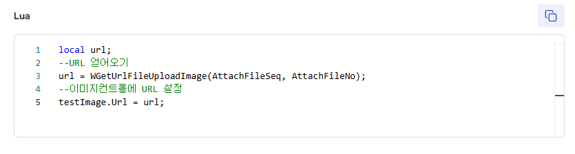
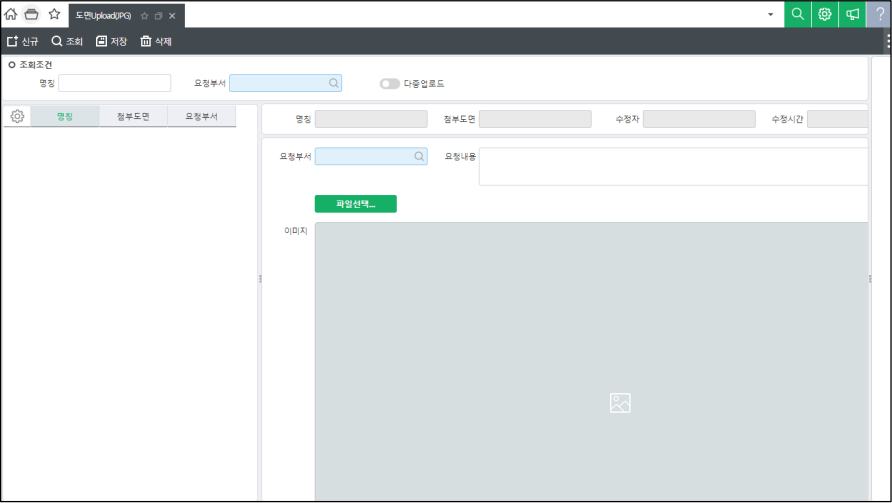

파일 컨트롤 이미지 URL 가져오기
파일컨트롤 이미지URL 활용
개요
파일 컨트롤에 등록한 이미지에 대한 URL을 가져오는 방법을 설명한 문서입니다.
설명
화면 메소드에서 파일 컨트롤에 등록한 이미지 파일 URL을 가져올 수 있습니다.
이미지 컨트롤과 같이 사용한다면 해당 URL을 이미지 컨트롤에 넣어 미리보기 할 수 있습니다.
사용 예제
local url;
--URL 얻어오기
url = WGetUrlFileUploadImage(AttachFileSeq, AttachFileNo);
--이미지컨트롤에 URL 설정
testImage.Url = url;

사이트 개발 예시

출처: \<https://kdc.ksystem.co.kr/developments/erpdev/M1736831885412>